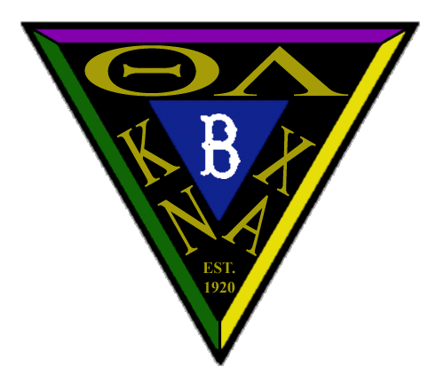

History of Theta-Upsilon Zeta
at
Polytechnic University

The logo on this page was designed by Brendan Falco, a Brother from RPI, for Reunion 2002.
It contains names of the three fraternities associated with Theta-Upsilon: Theta Lambda Theta Kappa Nu, and Lambda Chi Alpha. The "B" in the center is the Brooklyn Dodgers' logo, and "1920" is the year that the local fraternity was established at Poly.